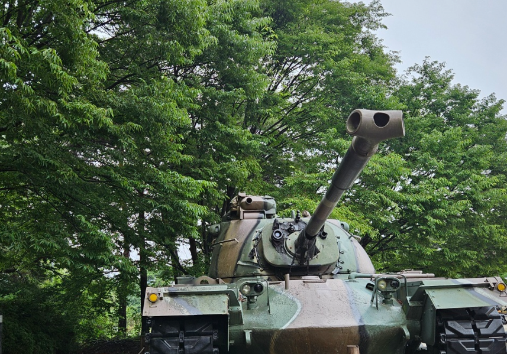

1. 살아가기 외롭고 힘들어
중학교 3학년 김규리는 장애를 지닌 오빠 두 명을 둔 늦둥이 막내딸로, 어린 시절에는 아버지의 각별한 사랑을 받으며 성장하였다. 그러나 아버지는 동시에 권위적이고 가부장적인 양육 태도를 보였고, 맞벌이 부모의 바쁜 생활과 반복되는 부부 갈등은 가정 내 정서적 안정감을 무너뜨렸다. 특히 어머니는 양육 스트레스와 정서적 소진으로 인해 우울 증상을 심화시켰고, 이러한 상황 속에서 김규리는 점차 정서적 보살핌과 애정으로부터 소외되어 갔다.
어릴 적에는 자신이 오빠들과 달리 부모에게 사랑받고 있다는 사실에 안정감을 느꼈으나, 성장하면서 어머니로부터 장애오빠들을 도와야 한다는 요구와 함께 과도한 책임이 전가되었고, 장애오빠들과의 관계 갈등 역시 깊어지면서 내면의 혼란이 가중되었다. 이로 인해 자신의 감정을 효과적으로 조절하지 못하고, 자해 행동을 통해 자신의 분노와 억울함, 무력감을 표현하게 되었다.
현재 사춘기 청소년 시기의 김규리는 정서 표현의 미숙함, 낮은 자존감, 가족 내 역할에 대한 혼란, 그리고 애착 손상 등 복합적인 심리적 고통을 겪고 있다. 이는 지속적인 감정 조절 어려움과 자해행동을 반복적, 주기적인 형태로 나타나고 있다. 청소년기에 알맞은 가족 내에서 보호받기보다는 기능적 역할을 수행해야 하는 위치에 놓인 김규리는 자신의 존재 가치에 대한 혼란을 경험하고 있으며, 정서적 안전 기반이 부재한 상태에서 심리적 위기에 놓여 있는 상황이다.
2. 정서·심리적 특징 분석

(1) 분노 조절의 어려움 및 충동성
내담자는 사소한 자극에도 쉽게 분노하고 욱하는 반응을 보이며, 감정을 해소하지 못할 경우 자해라는 자기파괴적 행동으로 감정을 표출한다. 이는 정서적 억압과 분출 사이의 안전한 조절 전략이 결여된 상태임을 반영한다.
(2) 자기 가치감 및 정체감 혼란
남성 중심의 가족 구조 속에서 자신의 위치와 의미가 축소된 경험을 반복적으로 겪으며, 여성으로서의 정체성과 자아존중감이 왜곡되어 있다. 부모의 인정과 애정을 받지 못한 채, 책임만을 요구받는 경험은 자기 비하로 연결될 가능성이 크다.
(3) 애착 결핍과 정서적 고립
어머니의 우울로 인한 감정적 부재와 아버지의 일방적 권위주의는 내담자가 안정된 애착관계를 형성하지 못하도록 만들었으며, 보호받고 있다는 심리적 안전감을 느끼지 못한 채 정서적으로 고립되어 있다. 이는 ‘나는 돌봄 받을 수 없는 존재’라는 핵심 신념(core belief)을 강화시킨다.
(4) 가정 내 갈등의 내면화
부모 간 갈등을 자주 목격해 온 내담자는 가족 전체의 불안과 긴장을 내면화하며, 자신의 감정보다 타인의 감정을 먼저 의식하는 정서 왜곡 상태에 놓여 있다. 이는 자기감정의 경계를 잃고 가족의 감정에 휘둘리는 감정적 융합(enmeshment)으로 이어진다.
(5) 왜곡된 관심 및 애정 욕구 표현
자해 및 분노 폭발은 주변의 관심과 정서적 반응을 유도하는 수단으로 기능하고 있다. 이는 애정을 직접적으로 표현하거나 요청할 수 없는 환경 속에서 나타나는 간접적 표현 방식으로, 내면의 고통을 전달하기 위한 ‘도움 요청의 신호’로 해석될 수 있다.
(6) 우울 및 불안 증상의 동반 가능성
수면장애, 식욕 저하, 자해, 고립감 등은 우울과 불안의 복합적인 정서 증상군을 시사하며, 이는 심리적 고통이 단순한 일과성 반응을 넘어 지속적이며 임상적인 수준의 문제로 발전했음을 의미한다.
3. 감정조절 방향 및 해소
위 학생은 감정조절 능력, 자존감, 애착, 관계 패턴 등 핵심 정서기능 전반에서 복합적인 결핍과 왜곡을 보여준다. 특히 자해를 감정 해소 수단으로 고착화하고 있다. 이에 즉각적이고 집중적인 개입이 요구되는 고위험군 청소년으로 판단된다. 따라서 위 학생을 위하여 정서 표현 기술 습득, 자존감 회복, 가족 내 소통 재구성, 안전기반 제공을 위한 다중체계적 접근(개별·가족·학교 연계)이 병행되어야 할 것이다.
2025.02.23 - [상담] - 초등2학년, 강한 자기중심성에 의한 감정 조절 미흡, 회피 성향
초등2학년, 강한 자기중심성에 의한 감정 조절 미흡, 회피 성향
유진이(초등2학년)는 1남 2녀 중 막내 맞벌이 부모는 오빠와 년년생이라 돌봄이 필요하여 조부모집으로 들어가서 살게됨. 막내 유진이는 태어난 후 할머니 양육으로 성장함. 큰딸은 남동생과 친
think-sis.co.kr